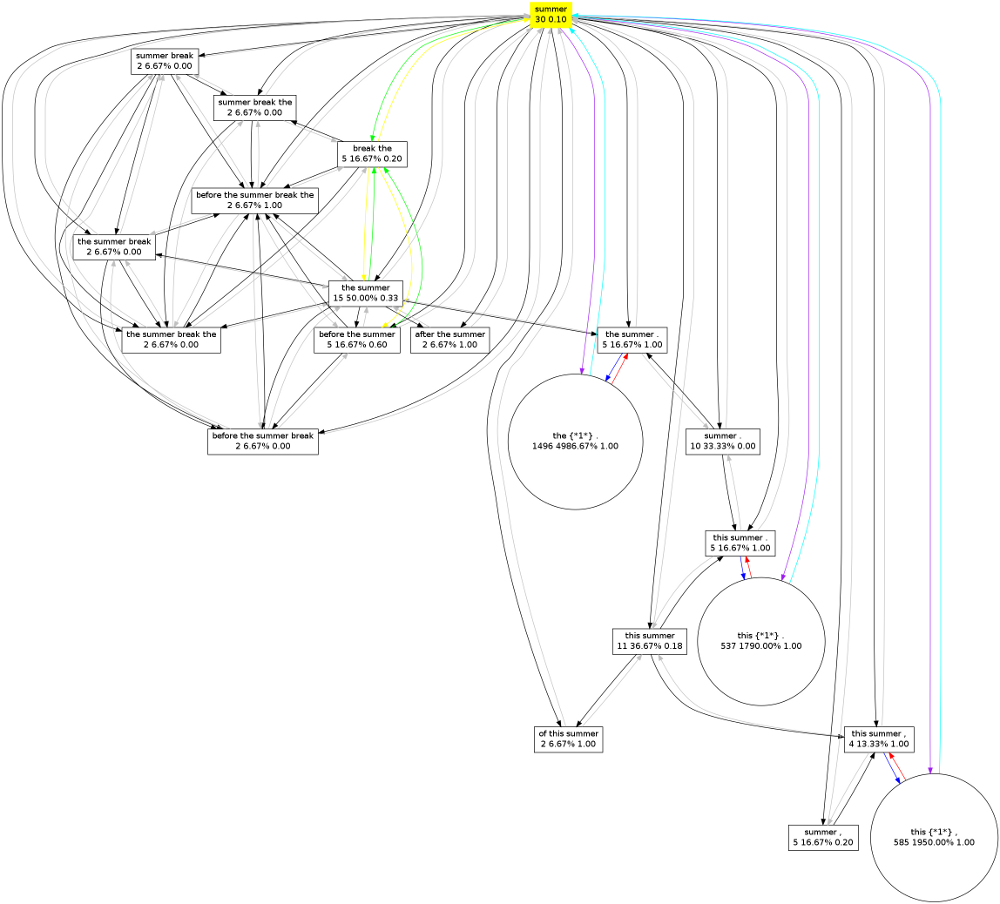
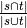

Colibri is a collection of software developed for the Ph.D. research project Constructions as Linguistic Bridges. This research examines the identification and extraction of aligned constructions or patterns across natural languages, and the usage of such constructions in Machine Translation. The aligned constructions are not identified on the basis of an extensive and explicitly defined grammar or expert database of linguistic knowledge, but rather are implicitly distilled from large amounts of example data. Our notion of constructions is broad and transcends the idea of words or variable-length phrases. We also consider constructions with one or more gaps, as well as context-sensitive machine learning techniques. Our aim is to find new methods that prove beneficial in a Machine Translation setting.
The software consists out of various tools, each of which will be discussed in this documentation. Because of the computational complexity and need to have the software deal as efficiently as possible with time and space constraints, almost everything is written in C++. The exception is the experiment framework surrounding the actual core software; this is written in Python. Depending on the size of your input corpus, certain tasks may take considerable memory. We recommend a Linux machine with at least 8GB RAM.
This documentation will illustrate how to work with the various tools of colibri, as well as elaborate on the implementation of certain key aspects of the software.
Colibri is hosted on github and should be retrieved through the versioning control system git. Provided git is installed on your system, this is done as follows:
$ git clone git://github.com/proycon/colibri.git
You need to compile the software, but in order to do so you must first install the dependency Timbl [Daelemans2010] ; a tarball is obtainable from the Timbl website , follow the instructions included with Timbl to install it.
In addition to the C/C++ compiler (gcc), the build process for colibri makes use of autoconf and automake. Make sure these are installed on your system. Also install the package autoconf-archive if available on your distribution. Colibri can now be compiled and installed:
$ cd colibri
$ bash bootstrap
$ ./configure
$ make
$ make install
You can optionally pass a prefix if you want to install colibri in a different location:
$ ./configure --prefix=/usr/local/
If you want to make use of the MT experiment framework included as a part of Colibri, you also need the Python Natural Language Processing library (pynlpl) installed. This can be done as follows:
$ sudo easy_install pynlpl
If easy_install is not available, then first install the python-setuptools package. Or obtain pynlpl manually through git:
$ git clone git://github.com/proycon/pynlpl.git
Colibri is always under heavy development. Update your colibri copy by issuing a git pull:
$ git pull
And then recompile as per the above instructions.
Colibri consist of various programs, each of which will output an extensive overview of available parameters if the parameter -h is passed. Each program is designed for a specialised purpose, with specific input and output formats. It is often needed to call multiple programs in succession to obtain the final analysis or model you desire.
Computation on large datasets begs for solutions to keep memory consumption manageable. Colibri requires that input corpora are converted into a compressed binary form. In this form each word-type in the corpus is represented by a numeric class. Highly frequent word-types get assigned low class numbers and less frequent word-types get higher class numbers. The class is represented in a dynamic-width byte-array, rather than a fixed-width integer. The null byte has special significance and is used as delimiter between tokens. This implies that a class number may never contain a null byte in its representation.
All internal computations of all tools in colibri proceed on this internal representation rather than actual textual strings, keeping running time shorter and memory footprint significantly smaller.
When working with colibri, you first want to class encode your corpus. This is done by the program classencode. It takes as input a tokenised monolingual corpus in plain text format, containing one sentence per line. Each line should be delimited by a single newline character (unix line endings). Colibri is completely agnostic when it comes to the character encoding of the input. Given a corpus file yourcorpus, class encoding is done as follows:
$ classencode -f yourcorpus
This results in two files:
- yourcorpus.cls - This is the class file; it lists all word-types and class numbers.
- yourcorpus.clsenc - This is the corpus is encoded binary form. It is a lossless compression that is roughly half the size of the original
If your corpus is not tokenised yet, you can consider using the tokeniser ucto (not part of colibri), this will also do sentence detection and output one line per sentence:
$ ucto -L en -n untokenisedcorpus.txt > tokenisedcorpus.txt
The above sample is for English (-L en), several other languages are also supported.
Given an encoded corpus and a class file, the original corpus can always be reconstructed. This we call class decoding and is done using the classdecode program:
$ classdecode -f yourcorpus.clsenc -c yourcorpus.cls
Output will be to stdout.
Sometimes you want to encode new data using the same classes already used for another data set. For instance when comparing corpora, it is vital that the same classes are used, i.e. that identical words are assigned identical numerical classes. This also applies when you are working with a training set and a separate test set, or are otherwise interested in a comparative analysis between two comparable datasets. The initial class file is built on the training set, and it can be reused to encode the test set:
You can encode a dataset, here named testset using an existing class file, trainset.cls, as follows:
$ classencode -f testset -c trainset.cls
This will result in an encoded corpus testset.clsenc and an extended class file testset.cls, which is a superset of the original trainset.cls, adding only those classes that did not yet exist in the training data.
The patternfinder program is used to extract recurring patterns from a monolingual corpus. This results in a pattern model. The extracted patterns are n-grams or skip-grams, where a skip-gram an n-gram with one or more gaps of a predefined size, thus containing unspecified or wildcard tokens. The internal data representation consists of a byte-array where a null byte separates words, each represented by a class number. Gaps are expressed by two consecutive null bytes, the configuration of the gap sizes is stored in a separate byte-array.
The pattern finding algorithm is iterative in nature and it guaranteed to find all n-grams above a specified occurrence threshold and given a maximum size for n. It does so by iterating over the corpus n times, iterating over all possible values for n in ascending order. At each iteration, a sliding window extracts all n-grams in the corpus for the size is question. An n-gram is counted in a hashmap data structure only if both n-1-grams it by definition contains are found during the previous iteration with an occurrence above the set threshold. The exception are unigrams, which are all by definition counted if they reach the threshold, as they are already atomic in nature. At the end of each iteration, n-grams not making it to the occurrence threshold are pruned. This simple iterative technique reduces the memory footprint compared to the more naive approach of immediately storing all in a hashmap, as it prevents the storing of lots of patterns not making the threshold by discarding them at an earlier stage.
At the beginning of each iteration of n, all possible ways in which any n-gram of size n can contain gaps is computed. When an n-gram is found, various skip-grams are tried in accordance with these gap configurations. This is accomplished by ‘punching holes’ in the n-gram, resulting in a skip-gram. If all consecutive parts of this skip-gram were counted during previous iterations and thus made the threshold, then the skip-gram as a whole is counted, otherwise it is discarded. After each iteration, pruning again takes places to prune skip-grams that are not frequent enough.
The pattern finder can create either indexed or unindexed models. For indexed models, the precise location of where an n-gram or skipgram instance was found in the corpus is recorded. This comes at the cost of much higher memory usage. Other colibri tools such as the grapher and aligner demand an indexed pattern model as input. For skipgrams in indexed models, the various fillings for the gaps are recorded explicitly. If you are only interested in simple n-gram or simple skip-gram counts, then an unindexed model may suffice.
First make sure to have class encoded your corpus. Given this encoded corpus, patternfinder can be invoked to produce an indexed pattern model. The occurrence threshold is specified with parameter -t, patterns occuring less will not be counted. The default value is two. The maximum value for n, i.e. the maximum n-gram/skipgram size, is set using the parameter -l, it defaults to 9:
$ patternfinder -f yourcorpus.clsenc -t 10
This will result in a pattern model yourcorpus.indexedpatternmodel.colibri. This model is stored in a binary format. To turn it into a human readable presentation it needs to be decoded. The patternfinder program can do this by loading the model using the -d flag, provided you also pass the class file needed for class decoding using -c parameter:
$ patternfinder -d yourcorpus.indexedpatternmodel.colibri -c yourcorpus.cls
Output will be to stdout in a tab delimited format, facilitating easy parsing. An excerpt follows:
#TYPES=89126;TOTALTOKENS=681047
#N CLASS OCC.COUNT TOKENS COVERAGE FREQ-ALL FREQ-G FREQ-N SKIPTYPES ENTROPY REFERENCES
3 the criteria of 3 9 1.321494698603767e-05 2.054269696851421e-06 2.054269696851421e-06 1.43282213423633e-05 0 - 1028:15 4342:43 14772:15
1 picking 3 3 4.404982328679225e-06 2.054269696851421e-06 2.054269696851421e-06 4.502354731524587e-06 0 - 2289:2 5825:20 13913:47
2 and interests 5 10 1.468327442893075e-05 3.423782828085701e-06 3.423782828085701e-06 1.056798703096632e-05 0 - 225:20 2466:47 2796:14 12622:13 21237:22
The various columns are:
The pattern model created in the previous example did not yet include skip-grams, these have to be explicitly enabled with the -s flag. When this is used, several other options become available for consideration:
Here is an example of generating an indexed pattern model including skipgrams:
$ patternfinder -f yourcorpus.clsenc -t 10 -s -S 3 -B -E
If you want to generate unindexed models, simply add the flag -u. Do note that for unindexed models the parameter -S is set unchangeably to two and and -T is set fixed to the same value as -t. When decoding an unindexed model, you explicitly need to add the -u flag, as shown in the next example. Note that indexed models can also be read (and decoded) in an unindexed way (with the -u flag); but unindexed models can not be read in an indexed way, as they simply lack indices:
$ patternfinder -d yourcorpus.unindexedpatternmodel.colibri -c yourcorpus.cls -u
$ patternfinder -d yourcorpus.indexedpatternmodel.colibri -c yourcorpus.cls -u
An important quality of pattern models lies in the fact that pattern models can be compared. More specifically, you can train a pattern model on a corpus and test it on another corpus, which yields another pattern model containing only those patterns that occur in both training and test data. The difference in count, frequency and coverage can then be easily be compared.
Make sure to use the same class file for all datasets you are comparing. Instructions for this were given in classencodetraintest:
$ patternfinder -f trainset.clsenc -t 10 -s -B -E
$ patternfinder -d trainset.indexedpatternmodel.colibri -f testset.clsenc -t 10 -s -B -E
This results in a model testset.colibri.indexedpatternmodel. This model can be used to generate a coverage report using the -C flag:
$ patternfinder -d yourcorpus.indexedpatternmodel.colibri -C
EXAMPLE OUTPUT:
COVERAGE REPORT
----------------------------------
Total number of tokens: 6258043
TOKENS COVERAGE TYPES TTR COUNT FREQUENCY
Total coverage: 6095775 0.9741 298298 123969.960 23769771 1.0000
Uncovered: 162268 0.0259
N-gram coverage: 6095772 0.9741 174363 34.9602 13357746 0.5620
1-gram coverage: 6095772 0.9741 16977 0.0028 6095772 0.2565
2-gram coverage: 5399143 0.8628 66845 0.0124 4353264 0.1831
3-gram coverage: 2298818 0.3673 55001 0.0239 1918446 0.0807
4-gram coverage: 615552 0.0984 22227 0.0361 633196 0.0266
5-gram coverage: 80184 0.0128 8002 0.0998 213206 0.0090
6-gram coverage: 19643 0.0031 3046 0.1551 81033 0.0034
7-gram coverage: 5174 0.0008 1414 0.2733 39487 0.0017
8-gram coverage: 2732 0.0004 851 0.3115 23342 0.0010
Skipgram coverage: 2871204 0.4588 123935 23.1670 10412025 0.4380
3-skipgram coverage: 1819730 0.2908 23063 0.0127 2088113 0.0878
4-skipgram coverage: 1380211 0.2205 19573 0.0142 1494049 0.0629
5-skipgram coverage: 757273 0.1210 21957 0.0290 1994542 0.0839
6-skipgram coverage: 299785 0.0479 20698 0.0690 1669473 0.0702
7-skipgram coverage: 137551 0.0220 18281 0.1329 1525863 0.0642
8-skipgram coverage: 81042 0.0130 20363 0.2513 1639985 0.0690
The coverage report shows the number of tokens covered by n-grams or skipgrams, split down in different categories for each n. The coverage column expresses this value as a fraction of the total number of tokens in the corpus. It shows how much of the test set is covered by the training set. The types column expresses how many unique patterns exist in the category. The count columns expresses the absolute occurrence count and the frequency column expresses the over-all frequency. The fact that the occurrence count can be higher than the absolute number of tokens covered is due to the fact that n-grams and skipgrams inherently show considerable overlap when grouped together.
A coverage report can be generated for any indexed pattern model; including models not generated on a separate test set.
The pattern finder has query mode which allows you to quickly extract patterns from test sentences or fragments thereof. The query mode is invoked by loading a pattern model (-d), a class file (-c) and the -Q flag. The query mode can be run interactively as it takes input from stdin, one tokenised sentence per line. The following example illustrates this, the sentence “This is a test .” was typed as input:
$ patternfinder -d europarl25k-en.indexedpatternmodel.colibri -c europarl25k-en.cls -Q
Loading model
Loading class decoder europarl25k-en.cls
Loading class encoder europarl25k-en.cls
Starting query mode:
1>> This is a test .
1:0 This 1085 0.001593135275538986
1:0 This is 395 0.001159978679885529
1:0 This is a 64 0.0002819188690354704
1:0 This {*1*} a 66 0.0002907288336928288
1:1 is 10570 0.0155202210713798
1:1 is a 947 0.002781012176839484
1:2 a 10272 0.01508265949339767
1:2 a test 2 5.8733097715723e-06
1:3 test 30 4.404982328679225e-05
1:4 . 23775 0.03490948495478285
The output starts with an index in the format sentence:token, the pattern found, and the next two values are the absolute occurrence count and the coverage ratio.
A pattern model contains a wide variety of patterns; a graph model goes a step further by making explicit relationships between the various patterns in this model. These relationships can be visualised as a directed graph, in which the nodes represent the various patterns (n-grams and skipgrams), and the edges represent the relations. The following relations are distinguished; note that as the graph is directed relations often come in pairs; one relationship for each direction:
In addition to the relations, a graph model can also compute a so-called exclusivity count and exclusivity ratio for each pattern. The exclusivity count of a pattern is the number of times the pattern occurs in the data without being subsumed by a larger found pattern. This exclusivity ratio is the exclusivity count as a fraction of the total occurrence count for the pattern. An exclusivity ratio of one indicates that the pattern is fully exclusive, meaning it is not subsumed by higher-order patterns. This notion of exclusivity may be of use in assessing compositionality of patterns.
The grapher program computes a graph model on the basis of an indexed pattern model created with patternfinder. When computing a model, you need to explicitly specify which relations you desire to extract and include in your model. The more relations you include, the more memory will be required. To keep the models as small as possible, it is recommended to include only the relations you need. The following flags are available:
The indexed pattern model that acts as input is specified using the -f flag. The following example generates a graph model with all relations:
$ grapher -f yourcorpus.indexedpatternmodel.colibri -a
The graph model will be stored in binary form, in the file yourcorpus.graphpatternmodel.colibri.
To decode this binary graph model into human readable form, read it in using the -d flag and pass a class file. In addition, you again need to pass what relations you want to load, as it is also possible to only load a subset of the relations. Simply use the -a flag if you want to load and output relations existing in the model:
$ grapher -d yourcorpus.graphpatternmodel.colibri -c yourcorpus.cls -a
This will result in output to stdout in a tab-separated format, as illustrated below:
#N VALUE OCC.COUNT TOKENS COVERAGE XCOUNT XRATIO PARENTS CHILDREN TEMPLATES INSTANCES SKIPUSAGE SKIPCONTENT SUCCESSORS PREDECESSORS
4 the summer break the 2 8 1.17466195431446e-05 0 0 1 8 1 0 0 0 0 1
2 that sustainable 2 4 5.8733097715723e-06 0 0 1 2 0 0 0 0 0 0
2 Kosovo , 20 40 5.8733097715723e-05 4 0.2 5 2 0 0 1 0 0 1
2 which refer 2 4 5.8733097715723e-06 0 0 2 2 0 0 0 0 1 0
2 relief , 2 4 5.8733097715723e-06 2 1 0 2 0 0 0 0 0 0
6 rule of law and respect for 3 18 2.642989397207535e-05 1 0.3333333333333333 2 20 0 0 1 0 0 2
In the above example, only the number of relations for each type is shown, if you want to view the actual relations, you need to instruct grapher to output the the whole graph by adding the -g flag:
$ grapher -d yourcorpus.graphpatternmodel.colibri -c yourcorpus.cls -a -g
#N VALUE OCC.COUNT TOKENS COVERAGE XCOUNT XRATIO PARENTS CHILDREN TEMPLATES INSTANCES SKIPUSAGE SKIPCONTENT SUCCESSORS PREDECESSORS
4 the summer break the 2 8 1.17466195431446e-05 0 0 1 8 1 0 0 0 0 1
Parent relations - 1
before the summer break the 2 10 1.468327442893075e-05 2 1
Child relations - 8
the 44027 44027 0.06464605232825341 90 0.002044200149908011
the summer 15 30 4.404982328679225e-05 5 0.3333333333333333
the summer break 2 6 8.80996465735845e-06 0 0
summer 30 30 4.404982328679225e-05 3 0.1
break 17 17 2.496156652918227e-05 2 0.1176470588235294
break the 5 10 1.468327442893075e-05 1 0.2
summer break the 2 6 8.80996465735845e-06 0 0
summer break 2 4 5.8733097715723e-06 0 0
Predecessor relations - 1
before 357 357 0.0005241928971128277 36 0.1008403361344538
Templates - 1
the {*2*} the 3266 13064 0.01918222971395513 3266 1
Outputting the whole graph may however produce a lot of unwanted output. Often you want to query your graph model for only one pattern. This is done with the -q parameter. In the following example we query our model for the pattern “summer”:
$ grapher -d yourcorpus.graphpatternmodel.colibri -c yourcorpus.cls -a -q "summer"
Outputting graph for "summer"
Query:
summer 30 30 4.40498e-05 3 0.1
Parent relations - 16
summer break 2 4 5.87331e-06 0 0
after the summer 2 6 8.80996e-06 2 1
the summer break the 2 8 1.17466e-05 0 0
this summer . 5 15 2.20249e-05 5 1
before the summer break 2 8 1.17466e-05 0 0
of this summer 2 6 8.80996e-06 2 1
the summer . 5 15 2.20249e-05 5 1
before the summer 5 15 2.20249e-05 3 0.6
the summer 15 30 4.40498e-05 5 0.333333
before the summer break the 2 10 1.46833e-05 2 1
this summer 11 22 3.23032e-05 2 0.181818
the summer break 2 6 8.80996e-06 0 0
this summer , 4 12 1.76199e-05 4 1
summer . 10 20 2.93665e-05 0 0
summer , 5 10 1.46833e-05 1 0.2
summer break the 2 6 8.80996e-06 0 0
Successor relations - 1
break the 5 10 1.46833e-05 1 0.2
Skipusage - 3
this {*1*} , 585 1755 0.00257691 585 1
this {*1*} . 537 1611 0.00236548 537 1
the {*1*} . 1496 4488 0.00658985 1496 1
It is possible to actually visualise the graph, grapher can output to the so-called dot-format used by the open-source graph visualisation software graphviz. You can output to this format by specifying the -G flag. This works both with and without -q, but if you do not specify a query the graph may turn out to be too huge to visualise:
$ grapher -d yourcorpus.graphpatternmodel.colibri -c yourcorpus.cls -a -q "summer" -G > summer.dot
Graphviz will do the actual conversion to an image file, such as png:
$ dot -Tpng summer.dot -o summer.png
This generated the following image:
An alignment model establishes a translation from patterns in one model to patterns in another. Each alignment has an associated score, or a vector of multiple scores, expressing the quality of the alignment. Alignments can currently be computed in three ways, all of which are unsupervised methods, and the of which the last method is the superior one:
The pattern models have to be generated on the basis of a parallel corpus. For colibri a parallel corpus consists of two corpus files, one for each language. The sentences on the n-th line of each of the corpus files corresponds and should be translations of each other. Pattern and graph models can then be generated separately on both of these corpora. An indexed pattern model, or derived graph model, is required as input for the aligner program.
Alignments computed solely on the basis of sentence co-occurrence are fairly weak. For all patterns that co-occur in at least one sentence, a Jaccard co-occurrence score is computed as , where s and t are sets of sentence numbers in which the pattern occurs.
In the following example we translate French to English and assume pattern models have been computed already. Invoke the aligner program as follows, the -J flag chooses Jaccard co-occurrence:
$ aligner -s fr.indexedpatternmodel.colibri -t en.indexedpatternmodel.colibri -J
This will result in an output file alignmodel.colibri, which is in a binary format. If you want an alternative output filename you can specify it using the -o parameter.
Several other parameters adjust the behaviour of the alignment algorithm and output:
This is an experimental method for computing alignments directly on the basis of the patterns. It is modelled after IBM Model 1 and uses the Expectation Maximisation algorithm to iteratively optimise the model’s parameters. The pseudo-code for the EM algorithm applied to this model is as follows:
initialize t(t|s) uniformly
do until convergence
set count(t|s) to 0 for all t,s
set total(s) to 0 for all s
for all sentence pairs (t_s,s_s)
set total_s(t) = 0 for all t
for all patterns t in t_s
for all patterns s in s_s
total_s(t) += t(t|s)
for all patterns t in t_s
for all patterns s in s_s
count(t|s) += t(t|s) / total_s(t)
total(s) += t(t|s) / total_s(t)
for all s
for all t
t(t|s) = count(t|s) / total(s)
In the following example we translate French to English and assume pattern models have been computed already. Invoke the aligner program as follows, the -E flag chooses Expectation Maximisation:
$ aligner -s fr.indexedpatternmodel.colibri -t en.indexedpatternmodel.colibri -E
This will result in an output file alignmodel.colibri, which is in a binary format. If you want an alternative output filename you can specify it using the -o parameter.
Several other parameters adjust the behaviour of the EM alignment algorithm and output:
Instead of uniform initiatisation, this method can also be initialised using the co-occurrence method laid out in the previous section. Simply add the -J parameter to achieve this.
GIZA++ is open-source software for the computation of word alignment models according to the IBM Models and HMM models (see GIZA++) [OchNey2003] . The aligner program can use the models produced by GIZA++ and extract aligned pairs of phrases. Two GIZA models (*.A3.final) are required, one for each translation direction. The extraction algorithm iterates over all sentence pairs in the GIZA models, these sentence pairs contain information in the form of what word-index of the source sentence is aligned to what word-index of the target sentence, and vice versa for the reverse model. Given such a bidirectional pair of alignments, the algorithm first collects all relevant patterns and for each possible combination it computes whether the word-alignment indices from the GIZA models support the alignment of the patterns. The criteria for whether an alignment between patterns is supported by the word alignments are:
Of all target patterns (if any) meeting this criteria for a given source pattern, only the strongest one is chosen. An alignment strength score is computed to represent how well an alignment is supported by word alignments. This is not to be confused with the actual alignment probability. This score is the number of words that aligns properly, as a fraction of the longest pattern size of the pair. Only alignments that reach a certain threshold will be aligned. If the score is not perfect (< 0), points from the union of the two word alignment directions will be considered and added to the score as well, however, these alignments carry less weight than intersection alignments (four times less by default).
This extraction algorithm is implemented as follows, given word alignments for source-to-target (sentence_s) and target-to-source (sentence_t):
patterns_t = all patterns in sentence_t
for all words word_s in sentence_s:
patterns_s = find patterns BEGINNING WITH word_s
for all patterns pattern_s in patterns_s:
bestscore = 0
for all patterns pattern_t in patterns_t:
aligned = 0
halfaligned = 0
firstsourcealigned = false
lastsourcealigned = false
firsttargetaligned = false
lasttargetaligned = false
for for all indices (alignedsourceindex, alignedtargetindex) in intersection:
if alignedsourceindex not in pattern_s or alignedtargetindex not in pattern_t:
aligned--; break;
else:
aligned++;
if alignedsourceindex == sourceindex: firstsourcealigned = true
if alignedsourceindex == sourceindex + patternsize_s: lastsourcealigned = true
if alignedtargetindex == targetindex: firstsourcealigned = true
if alignedtargetindex == targetindex + patternsize_t: lastsourcealigned = true
if ((aligned < 0) || (!firstaligned) || (!lastaligned)) break;
maxpatternsize = max(|pattern_s|,|pattern_t|)
score = aligned / maxpatternsize
if (score < 1):
for alignedsourceindex, alignedtargetindex in union:
if (alignedsourceindex in pattern_s and alignedtargetindex not in pattern_t) or (alignedsourceindex not in pattern_s and alignedtargetindex in pattern_t):
halfaligned++;
if halfaligned:
score = score + halfaligned / (maxpatternsize*4)
if (score > 1) score = 1
if score > bestscore:
bestscore = score
bestpattern_t = pattern_t
In the following example we translate French to English and assume pattern models have been computed already. Invoke the aligner program as follows, the -W flag chooses GIZA extraction and takes as parameters the two GIZA A3.final models (order matters!) separated by a colon. It is also necessary to pass the class the class file for both source (-S) and target language (-T), as the GIZA models do not use the colibri class encodings and thus need to be interpreted on the fly:
$ aligner -s fr.indexedpatternmodel.colibri -t en.indexedpatternmodel.colibri -W fr-en.A3.final:en-fr.A3.final -S fr.cls -T en.cls
Several other parameters adjust the behaviour of the EM alignment algorithm and output:
This alignment method replaces unsupervised word alignment symmetrisations heuristics like grow-diag, grow-diag-final [OchNey2003].
The alignment of skipgrams poses extra challenges. The three above alignment methods function much worse as soon as skipgrams are included. Therefore, an experimental alignment algorithm has been implemented to extract skipgrams on the basis of a graph model with instance and template relations. The algorithm starts with the n-grams that have been aligned by any of the three aforementioned algorithms, it then determines whether multiple target n-grams for a given source n-gram share a common template (i.e. a skip-gram that is an abstraction of a pattern). The template relation is a transitive relation, so recursion is applied to collect all possible templates, these can subsequently be clustered in one or more clusters, each cluster being completely independent of the other, not sharing any template or instance relationships. From each cluster only the best match, according to Jaccard co-occurrence is selected and aligned to the template(s) of the source pattern. This results in skipgram to skipgram alignments. N-gram to skipgram or skipgram to n-gram alignments are not supported by this method.
The algorithm is implemented as illustrated by the following pseudo-code:
for ngram_s in alignmatrix:
if |alignmatrix[ngram_s]| > 1: #(nothing to generalise otherwise)
skipgrams_s = get_templates_recursively(rel_templates_s[ngram_s])
if skipgrams_s:
for ngram_t in alignmatrix[ngram_s]
skipgrams_t = get_templates_recursively(rel_templates_t[ngram_t])
if skipgrams_t:
for skipgram_s in skipgrams_s:
for skipgram_t in skipgrams_t:
submatrix[skipgram_s][skipgram_t]++
prune all 1-values in submatrix
for skipgram_s in submatrix: #conflict resolution
if |submatrix[skipgram_s]| == 1:
skipgram_t = first and only
alignmatrix[skipgram_s][skipgram_t] = submatrix[skipgram_s][skipgram_t]
else:
clusters = get_independent_cluster(skipgrams_t) #complete subgraphs
for cluster in clusters:
maxcooc = 0
for skipgram_t in cluster:
if cooc(skipgram_s, skipgram_t) > maxcooc:
maxcooc = _
best = skipgram_t
elif == maxcooc:
if skipgram_t more abstract than best:
best = skipgram_t
if best:
alignmatrix[skipgram_s][best] = submatrix[skipgram_s][best]
The following example takes an alignment model computed with only n-grams according to one of the three methods outlined earlier. It outputs a new alignment model, a superset of the original one, that adds the skipgram relations. The -U flag activates the skipgram extraction algorithm. Make sure to use the -o parameter to output a new model to a new file:
$ aligner -U -d europarl25k-nl-en.alignmodel.colibri -o europarl25k-nl-en-withskipgrams.alignmodel.colibri
An alignment model can be viewed by decoding it using the -d option and by passing it the class file for both source (-S) and target language (-T):
$ aligner -d alignmodel.colibri -S fr.cls -T en.cls
The output format is a simple tab-delimited format.
An alignment model can also be outputted in a format suitable for the MT decoder moses [Koehn2007]:
$ aligner -d alignmodel.colibri -S fr.cls -T en.cls --moses
A good translation should faithfully convey the meaning of the original, and it should be rendered in fluent natural language. In statistical machine translation, these two aspects are represented by two distinct statistical models. The translation model is used to compute the likelihood of a sentence being faithful to the original meaning, and the target language model imposes a maximally fluent natural word order on the resulting translation in the target language by scoring typical, predictable word order as more probable than uncommon or malformed combinations. The central processing component of an SMT system is the decoder, which computes probabilities according to at least these two models for a huge number of possible translation hypotheses. This constitutes a vast search problem in which countless hypotheses are tested and compete against one another for the best probability score according to the joint statistical models. The translation chosen is the hypothesis found to attain the best score. Due to the size and complexity of the search problem, and the need to keep time and memory requirements manageable, considerable pruning of the search takes place. It is quite possible that the selected translation is found in a local maximum.
Colibri features a custom-tailored MT decoder modelled after the stack-based decoding principle used in Moses [Koehn2003]. This algorithm employs a beam search as a means to constrain the search space. The alignment model as discussed in the previous chapter provide the translation model. The mandatory language model can be computed with third-party software such as SRILM [Stolcke2002] .
The stack decoder maintains n separate stacks, the number of stacks equals the number of words in the source sentence. Each stack contains translation hypotheses that cover an arbitrary n words of the source sentence. Only a fixed number of the best translation hypotheses are retained, this is the stack size. In the decoding process proceeds iteratively, starting with an empty hypothesis for which no source words have been covered and thus no target words have been generated. This initial hypotheses is expanded by choosing each input pattern matching the source sentence, at any position, and translating it according to the translation model. The translations are added left-to-right, but the selected source are from any location. This makes reordering possible. This expansions in turn results in a larger number of new translation hypotheses which are added to the appropriate stacks. After the initial hypothesis, the first stack is processed top to bottom, expanding in turn each of the hypotheses in it, resulting in more hypotheses to be added to the higher stacks. When a stack is processed, the algorithm moves on to the next. The final stack will be the stack in which all source words are covered and thus in which the hypotheses represent translations of the whole sentence. The best one is selected as the translation.
The pseudo-code for the algorithm is as follows (from Moses Background) [Koehn2007]:
initialize hypothesisStack[0 .. nf];
create initial hypothesis hyp_init;
add to stack hypothesisStack[0];
for i=0 to nf-1:
for each hyp in hypothesisStack[i]:
for each new_hyp that can be derived from hyp:
nf[new_hyp] = number of foreign words covered by new_hyp;
add new_hyp to hypothesisStack[nf[new_hyp]];
prune hypothesisStack[nf[new_hyp]];
find best hypothesis best_hyp in hypothesisStack[nf];
output best path that leads to best_hyp;
The website Moses Background provides more detail about this algorithm. The algorithm implemented in colibri is identical, although hypothesis recombination is not implemented yet in the Colibi decoder.
The colibri decoder has been enhanced to be able to handle skipgrams. Source-side skipgrams need no special handling due to the stack-based nature that already supports it; translations with gaps however do need special attention. The colibri decoder solves this by introducing a second set of another n stacks for hypotheses containing gaps. The expansion operation for hypotheses in these stacks attempts explicitly seeks to fill one of gaps first, the expanded hypotheses will again form part of the normal gapless stacks once all gaps are filled.
Unlike Moses, the colibri decoder also integrates support for classifiers. This will be introduced in the next chapter.
As a Language Model is a vital component of a machine translation system, here are instructions on how to generate a language model using SRILM [Stolcke 2002]_. The language model should be generated for only the target language corpus:
$ ngram-count -kndiscount -order 3 -unk -text yourtargetcorpus.txt -lm yourtargetcorpus.lm
The above command generates a trigram model (-order 3) with (modified) Knesser Ney discounting (-kndiscount), it includes supports for unknown words (-unk). Support for unknown words and back-off are requirements for the colibri decoder. The final argument specifies the output file for the language model, this can in turn be read by the colibri decoder.
Note that as this is external softare, you need to pass the tokenised corpus in plain-text format, not the class-encoded binary variant used by colibri. But do make sure both are generated on exactly the same data.
The colibri decoder requires at least an alignment model (also known as translation model), and a language model. The translation model may contain multiple scores. The final score for an hypothesis is a weighted log-linear combination of all components model, in which each model carries a weight. These weights are passed as parameters to the decoder. The -W argument specifies weights for the scores in the alignment model, it should be repeated for the amount of scores in a model. The -L argument sets the weight for the language model, -D does the same for the distortion model (both default to one). The following example shows how to invoke the decoder given a translation model (-t) and language model (-l). It is also necessary to specify the class file for both source (-S) and (-T) target:
$ decoder -t alignmodel.colibri -l yourtargetcorpus.lm -S yoursourcecorpus.cls -T yourtargetcorpus.cls -W 1 -W 1 < inputfile.txt
The decoder reads its input from stdin, hence the `` < inputfile.txt``. The input should consist of tokenised sentences in the source language, one sentence per line. It will output the translation to stdout, again one sentence per line. Extra information will be written to stderr, the verbosity of which can be adjusted with the -v parameter.
The decoder takes the following extra parameters:
In addition, the following parameters control output and verbosity:
(yet to be written)
(yet to be written)
| [Daelemans2010] | Daelemans, W., Zavrel, J., Van der Sloot, K., and Van den Bosch, A. (2010). TiMBL: Tilburg Memory Based Learner, version 6.3, Reference Guide. ILK Research Group Technical Report Series no. 10-01. |
| [Koehn2003] |
|
| [Koehn2007] | (1, 2)
|
| [OchNey2003] | F.J Och and H. Ney, A Systematic Comparison of Various Statistical Alignment Models, Computational Linguistics, (2003) volume 29, number 1, pp. 19-51 |
| [Stolcke2002] |
|